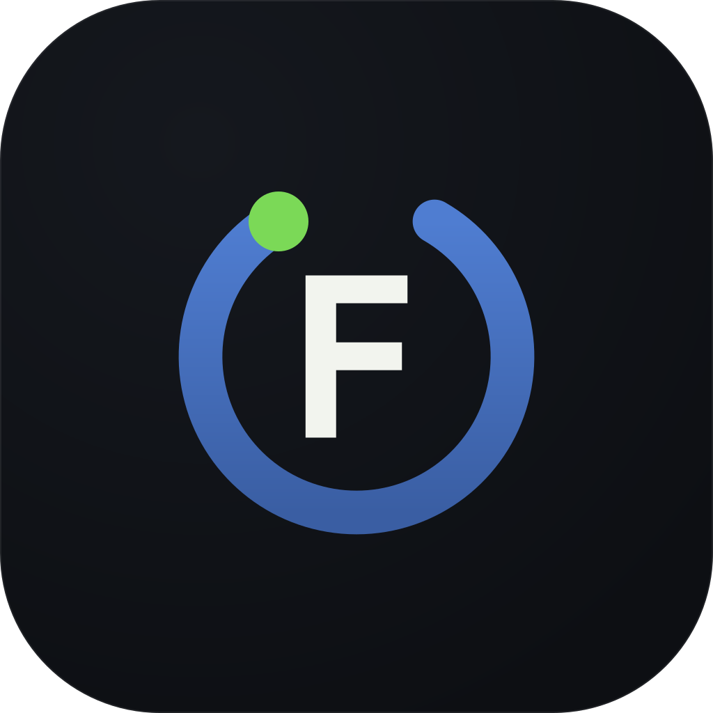
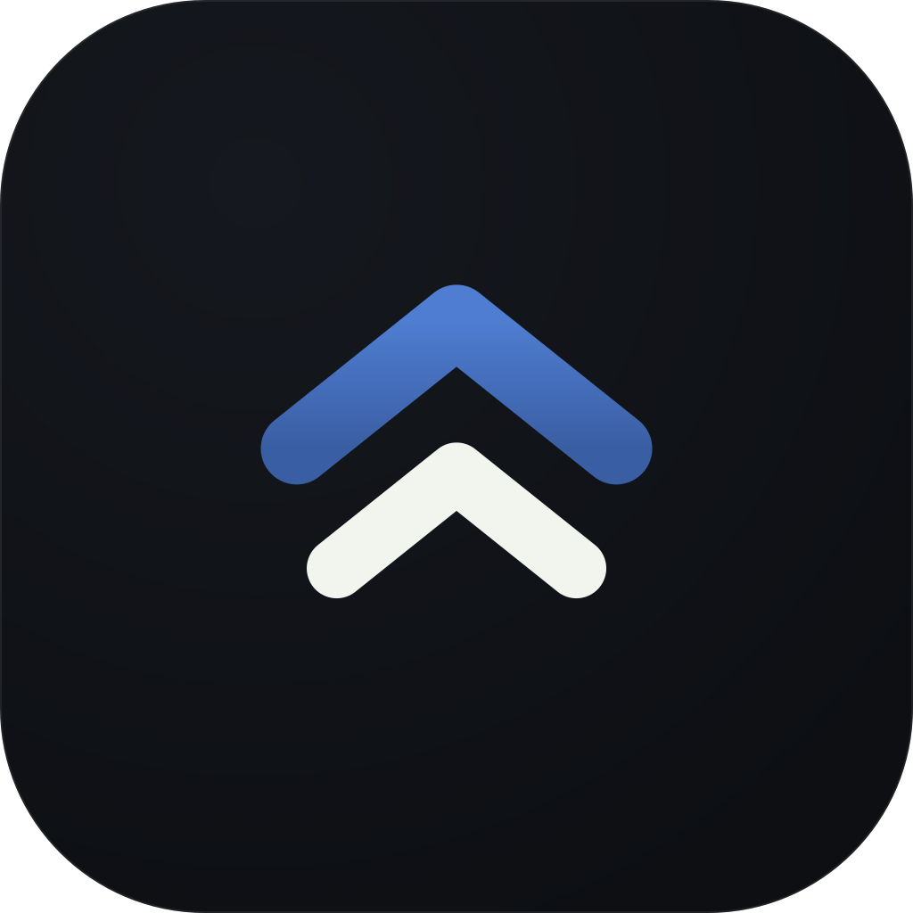
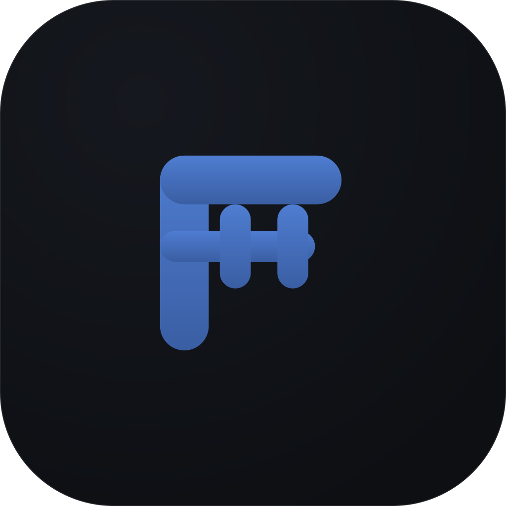
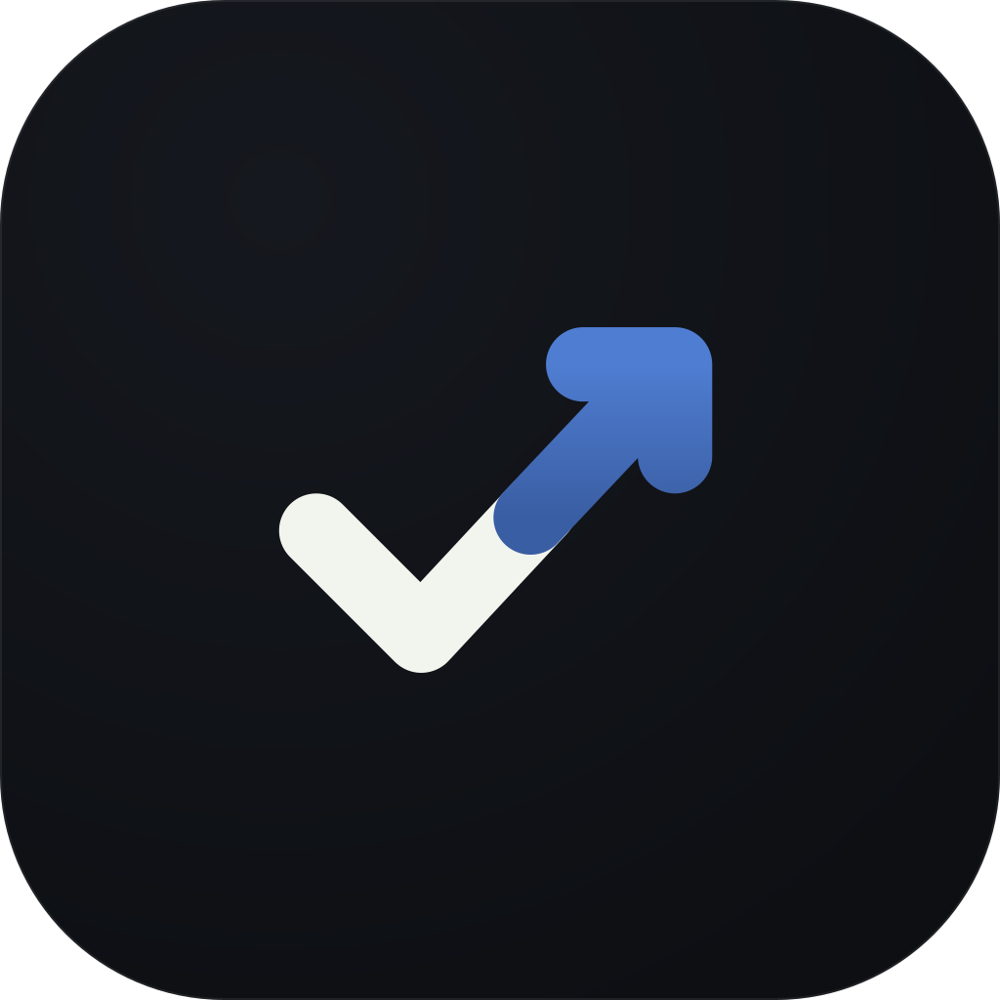

FORMA · Identité visuelle
Pas de dessin décoratif : chaque marque part d'un mécanisme réel de l'application — le cycle de suivi, la relation coach / élève, la salle, la coche quotidienne. Toutes sont vectorielles, dessinées sur une grille de 64 px, alignées sur les tokens du prototype (accent #4F7DD1, Space Grotesk) et lisibles jusqu'à 16 px dans la barre d'onglets.
Un anneau de progression ouvert à 290° — jamais tout à fait refermé, parce que la semaine suivante recommence — serré autour du F de Space Grotesk, la police de l'app. Le point vert au bout de l'arc est le relevé du jour, exactement comme le dernier nœud d'une courbe de poids. C'est la piste la plus « produit » : elle raconte le suivi, pas la musculation.

Deux chevrons : le coach devant, l'élève dans sa foulée, même geste, même direction. De loin c'est une flèche vers le haut ; de près, le A de FORMA. C'est la seule piste qui dit ce que vend l'app — une relation, pas un tracker. Elle survit à tout : 16 px, gravure, fond photo, une seule couleur.

Le F dont la barre médiane s'est chargée : un haltère complet — barre, deux disques, manchons — d'un seul aplat, soudé au fût de la lettre. La seule piste explicitement « salle » : immédiatement classée par quelqu'un qui découvre l'icône, au prix d'un registre plus commun. C'est aussi la plus fragile en très petit — en dessous de 24 px, la lecture se brouille : prévoir le logotype ou une autre piste pour la barre d'onglets.

Mono clair
La coche quotidienne de l'écran Élève (entraînement : oui — repas : oui) ne s'arrête pas : son montant continue et devient une flèche. C'est l'argument central du coaching — la trajectoire n'est que l'accumulation des jours cochés — dessiné en un seul trait. Le clair est la coche telle qu'on la valide le soir ; l'accent prend le relais au point où un signe ordinaire se serait arrêté.

Space Grotesk Bold, interlettrage +4 % pour tenir en petit, tracés vectorisés : aucun SVG ne dépend d'une webfont installée. Variante de droite réservée à la piste ORBE — le O devient l'anneau, le mot porte alors la marque à lui seul.

Lockup verticalRéserver autour du logo une marge égale à la hauteur de la capitale du mot (34 px pour un lockup de 64 px). Rien n'entre dedans.
Marque seule : 16 px. Lockup horizontal : 24 px de hauteur de marque. En dessous, passer à la marque seule.
Le vert et l'ambre sont sémantiques dans l'app (progression, vigilance). Hors du point de progression, le logo ne les utilise pas.
Pas d'étirement, de rotation, d'ombre portée, de contour ajouté. Sur fond photo ou clair : version monochrome, jamais la version couleur.
brand/marks/ — les 4 marques, en couleur + mono clair + mono sombre (currentColor, donc colorables en CSS)brand/lockups/ — lockups horizontaux (couleur + mono clair + mono sombre) et verticaux, logotype seul, logotype à O ouvertbrand/app-icons/ — dalles 1024 px prêtes pour l'export iOS / Androidbrand/favicons/ — 32 pxbrand/tools/build_logos.py — le générateur : toute la géométrie et la vectorisation du texte vivent là, les SVG sont des sorties